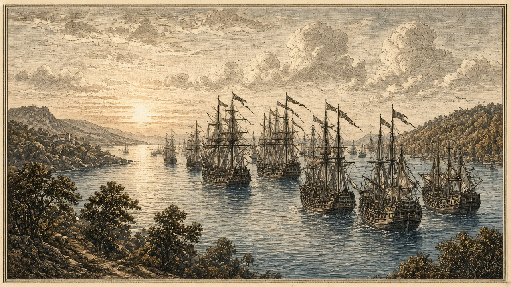

なのですと藍岬が開戦 あろあろは銀嶺へ宣戦、一九二期に開戦
あろあろからなのですへ移民七万六千人 桃谷の兵站が落ち予備兵千人が投降 紅峰首都へまた艦砲

【総合部】第187期、なのです主義人民共和国と藍岬共和国連邦が開戦した。藍岬はオラニウム連邦、オリョルッル王国とも交戦しており、戦線は三つに広がる。同じ期、あろあろ国は銀嶺侯国へ宣戦を布告した。銀嶺とチェス＝シロバキア共和国の戦況、移民の動きとあわせて詳報は2面・3面。
あろあろ国からなのです主義人民共和国へ七万六千人が移住し、受け入れ後の人口は百四十万五千三百人となった。到着者の登録と各市への案内が進む。詳報は2面・6面。
桃谷の兵站が落ちる 今期一万四千七百人
オリョルッル王国は桃谷連邦共和国の兵站基地（40,44）を占領し、予備兵千人が投降した。今期の公報損害は桃谷一万四千七百人、オリョルッル八百人。累計は桃谷六万五千人、オリョルッル一万三千四百人。詳報は4面。国特集は8面。
紅峰首都へ艦砲 大都市三百人
なのですの戦艦は紅峰公国の首都ローテンホルン（41,52）の大都市を再び砲撃し、人口は三千八百人から三千五百人に減った。町（39,54）では千人、現代都市（40,55）では七百人が犠牲となった。陸戦の損害公報はなく、首都は紅峰領にとどまる。詳報は3面。